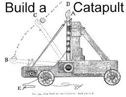

ჩვეულებრივი კატაპულტა დიდი ხის ნაგებობაა, რომელიც დიდი და სქელი თოკითაა მობმული ზევიდან. ასევე მას აქვს ბორბლები სამოძრაოთ, ვინაიდან ჩვენ ვიცით რომ ის გამოიყენებოდა ბრძოლის ველზე მა სჭირდებოდა რაღაც რაც მას მოძრაობის საშუალებას მისცემდა რათა უფრო შორს ან ახლოს მისულიყო რათა უფო კარგად დაემიზნებინა. ასევე მას სჭირდებოდა რაღაც რაც მას ხელახლა დატენვაში დაეხმარებოდა და ეს სასროლზე მობმული სქელი თოკი იყო რომელსაც ქაჩავდნენ რის შემდეგადაც შეგეძლო ხელახლა სროლა.
